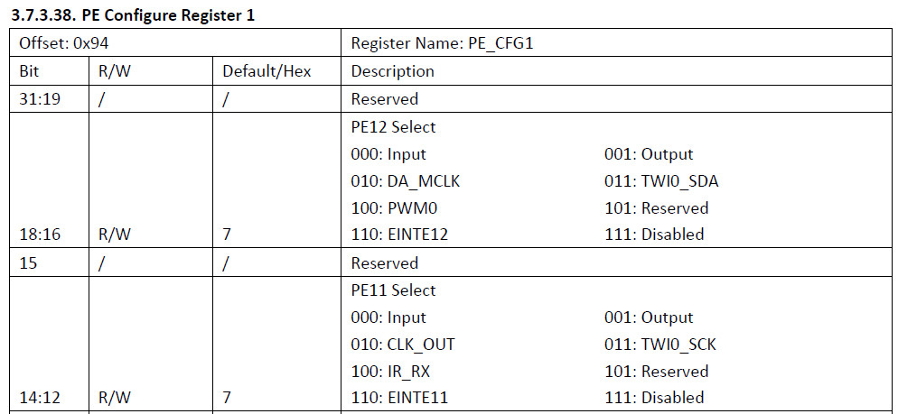
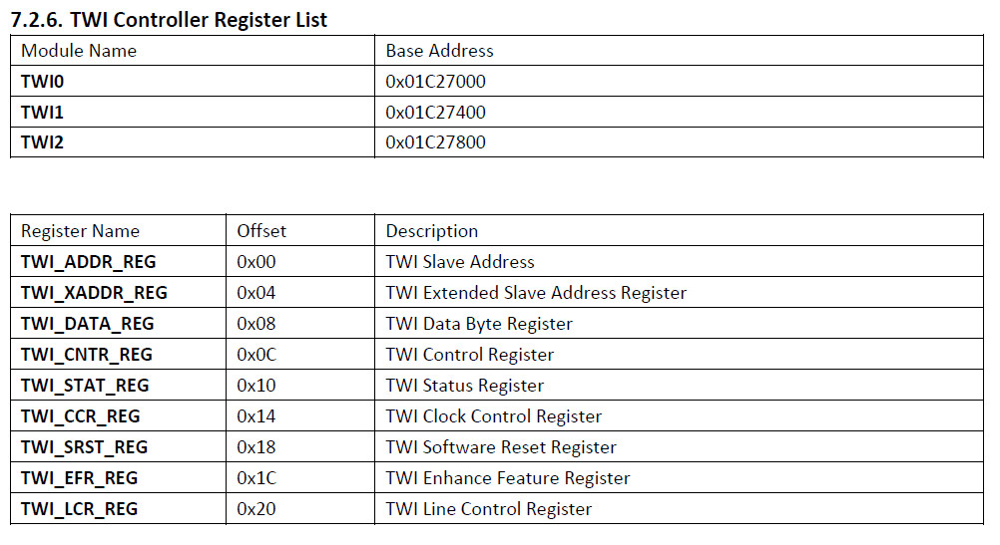

F1C100S >> Assembly
TWI(I2C)
參考資料：
1. pdf
2. lichee
3. mangopi_r
4. allwinner
I2C0腳位
| I2C0_SCK | PE11 |
|---|---|
| I2C0_SDA | PE12 |

暫存器

main.s
.global _start .equ CCU_BASE, 0x01c20000 .equ GPIO_BASE, 0x01c20800 .equ TWI0, 0x01c27000 .equ PLL_PERIPH_CTRL_REG, 0x0028 .equ AHB_APB_HCLKC_CFG_REG, 0x0054 .equ BUS_CLK_GATING_REG2, 0x0068 .equ BUS_SOFT_RST_REG2, 0x02d0 .equ PE, (0x24 * 4) .equ CFG0, 0x00 .equ DATA, 0x10 .equ ADDR, 0x00 .equ XADDR, 0x04 .equ DATA, 0x08 .equ CNTR, 0x0c .equ STAT, 0x10 .equ CCR, 0x14 .equ SRST, 0x18 .equ EFR, 0x1c .equ LCR, 0x20 .arm .text _start: .long 0xea000016 .byte 'e', 'G', 'O', 'N', '.', 'B', 'T', '0' .long 0, __spl_size .byte 'S', 'P', 'L', 2 .long 0, 0 .long 0, 0, 0, 0, 0, 0, 0, 0 .long 0, 0, 0, 0, 0, 0, 0, 0 _vector: b reset b . b . b . b . b . b . b . reset: ldr r0, =CCU_BASE ldr r1, =0x80041800 str r1, [r0, #PLL_PERIPH_CTRL_REG] ldr r1, =0x00003180 str r1, [r0, #AHB_APB_HCLKC_CFG_REG] ldr r0, =GPIO_BASE ldr r1, =0x33000 str r1, [r0, #(PE + CFG0)] ldr r0, =CCU_BASE ldr r1, =(1 << 16) str r1, [r0, #BUS_CLK_GATING_REG2] str r1, [r0, #BUS_SOFT_RST_REG2] ldr r0, =TWI0_BASE ldr r1, =(0x78 << 1) | (1 << 0) str r1, [r0, #ADDR] main: b main .end